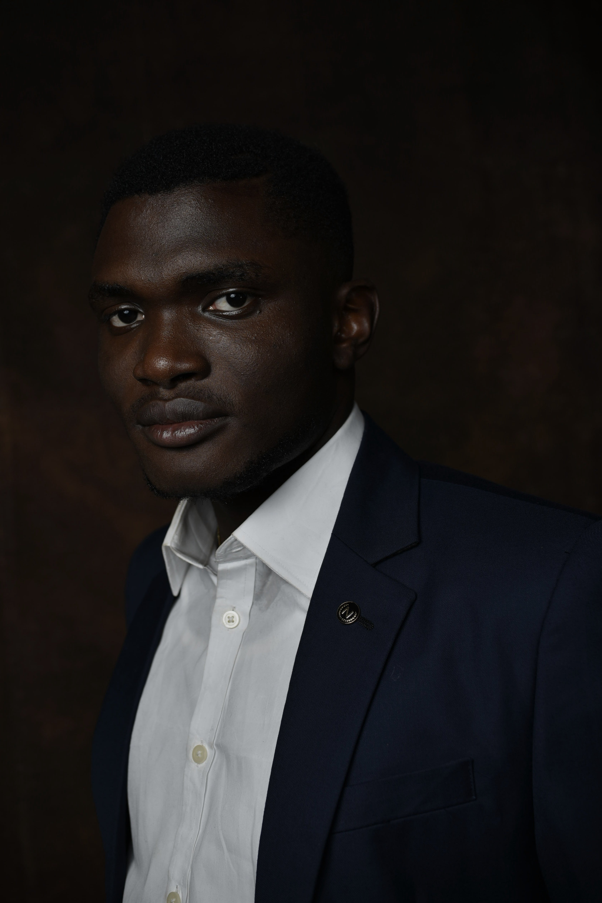

AfriVTON-Bench
Benchmark evaluating VTON model robustness on African textile patterns. Tests IDM-VTON, OOTDiffusion, CatVTON, and FitDiT with FID, LPIPS, SSIM, and frequency-domain texture analysis.
Applied ML Engineer building production AI systems across computer vision, NLP, and optimization. Currently architecting decision intelligence platforms at DataBacked Africa and researching cultural robustness in generative vision models.


I'm an Applied Machine Learning Engineer with 4+ years of experience shipping end-to-end ML systems in production — from data ingestion and model training to containerized deployment and monitoring on AWS, GCP, and Azure.
At DataBacked Africa, I'm architecting Intellign — a decision-intelligence platform combining genetic algorithm optimization with a conversational AI interface, serving healthcare, government, and education clients. Concurrently, I work as a Backend Engineer at Obscura Finance, deploying and monitoring privacy-preserving backend services for a crypto copy-trading platform.
As an independent researcher, I investigate cultural bias and robustness in generative vision models. My AfriVTON-Bench project benchmarks VTON models on African textile patterns. My MMIBC multimodal framework for breast cancer diagnosis won the Best Poster Award at DSN AI+ Bootcamp 2025 and is submitted to MIWAI 2026.
Active in the African AI ecosystem: two-time Deep Learning Indaba attendee, Travel Organizing Committee in Kigali, and former lead of a 100+ member AI chapter at FUNAAB.
Four years of building, shipping, and learning — from queue detection models to decision-intelligence platforms, across six companies in three countries.
At DataBacked Africa, I'm leading the architecture of Intellign — a decision-intelligence platform where operators describe allocation goals in natural language and a genetic algorithm engine does the heavy lifting. The system processes 500+ resources against 750+ targets under competing constraints in minutes, streaming real-time progress as it works. Our first major deployment moved medical graduates into healthcare facilities — a months-long manual process, compressed to minutes. Human reviewers step in at the end: approve, adjust, export.
Running concurrently, I handle backend infrastructure at Obscura Finance — a crypto copy-trading platform built on a clear premise: trust should be cryptographic, not social. Traders prove performance without exposing strategies; followers subscribe based on verifiable results. My work keeps the services behind that promise alive — deployment pipelines, observability stacks, incident response, and the privacy-preserving verification layer built on Nillion and Horizen.
At Synthik Labs, I built a synthetic data generation pipeline spanning tabular, text, and image modalities — parallelized LLM inference with schema enforcement, de-duplication, and multi-format export. Filecoin provenance tracking made every generated dataset reproducible and auditable. The kind of infrastructure that makes training data trustworthy at scale.
At TAO AI, I adapted TinyLLaMA for African agricultural contexts on AWS SageMaker — fine-tuning the model then compressing it via knowledge distillation for resource-constrained edge deployment. The result was a production chatbot and credit scoring system that ran efficiently on hardware most ML deployments would refuse. My first real experience making language models genuinely useful in African settings.
At Rediones, I built a multimodal topic-generation model using CLIP and Hugging Face LLMs to extract content themes from video and audio streams — plus a TTS model with voice cloning for personalized audio. Both systems shipped to GCP via FastAPI. A formative stretch working with genuinely multimodal data at production scale.
My first professional ML role. At Zummit Infolabs, I built real-time object detection pipelines — TensorFlow and OpenCV processing video streams to predict queue wait times and optimize customer flow. It established the foundation that everything since has built on.
Production systems and research prototypes spanning ML, computer vision, NLP, and backend engineering.
Investigating cultural robustness in AI and accessible medical imaging for underrepresented communities.
Designing a benchmark to evaluate how state-of-the-art VTON models handle African textiles with high-frequency patterns and non-Western garment silhouettes. Conducting a representation audit of VITON-HD, DressCode, and DeepFashion datasets. Developing evaluation protocols using FID, LPIPS, SSIM, and frequency-domain texture analysis to identify failure modes: pattern blurring, motif misalignment, and texture drift.
Explainable multimodal vision transformer framework fusing mammography and ultrasonography for breast cancer diagnosis in low-resource clinical settings with restricted imaging modalities. Recognized for novel cross-modal feature fusion approach and clinical applicability. Paper under review at MIWAI 2026.
Tools I reach for when building production ML systems and research pipelines.
Proficiency by domain
Active contributor to the African AI ecosystem through research, mentorship, and community building.
Open to full-time ML engineering roles, research collaborations, and speaking opportunities.